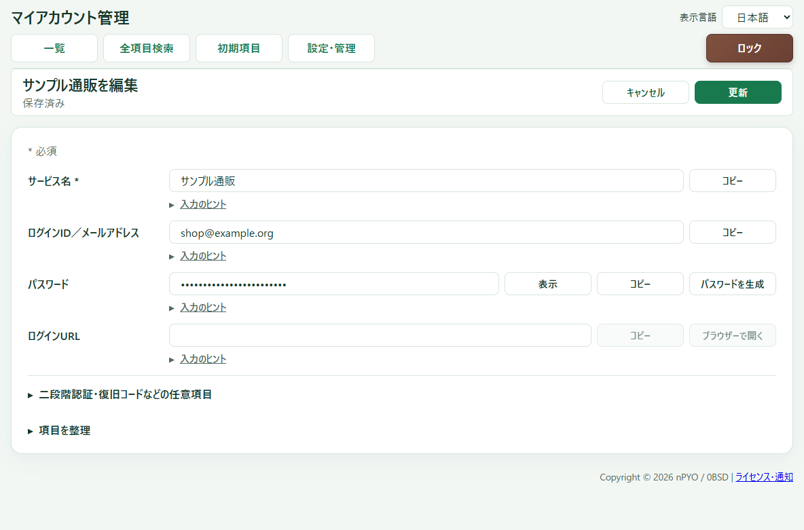
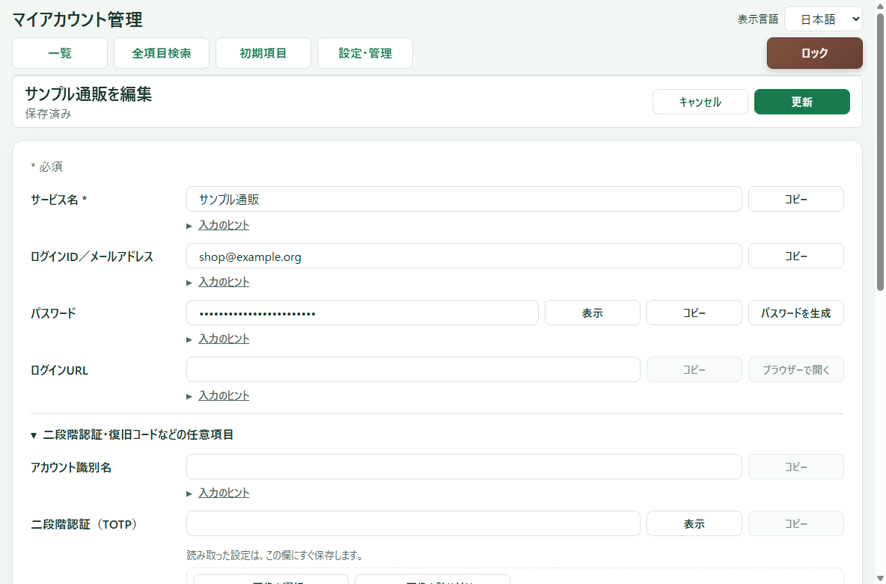
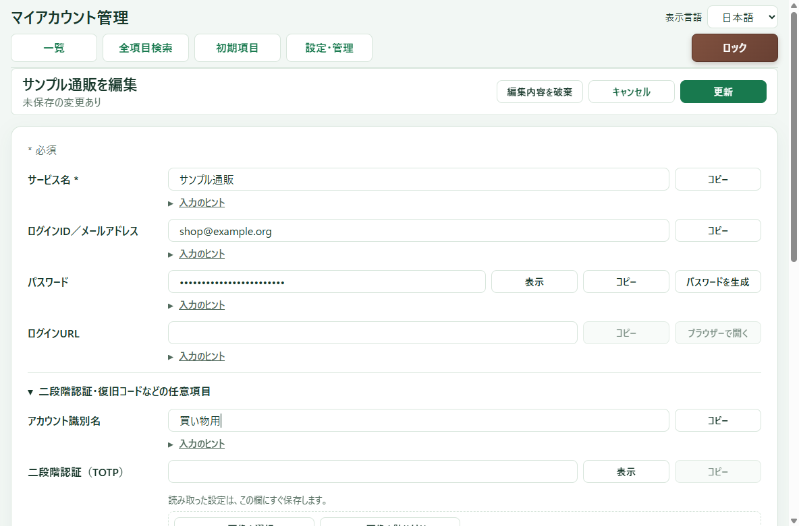
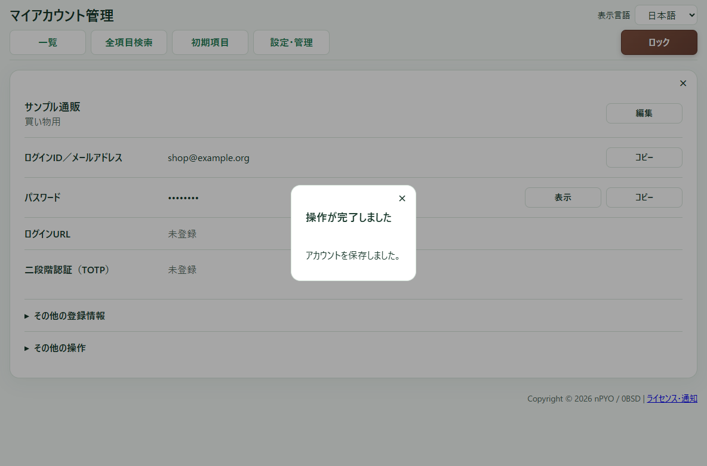
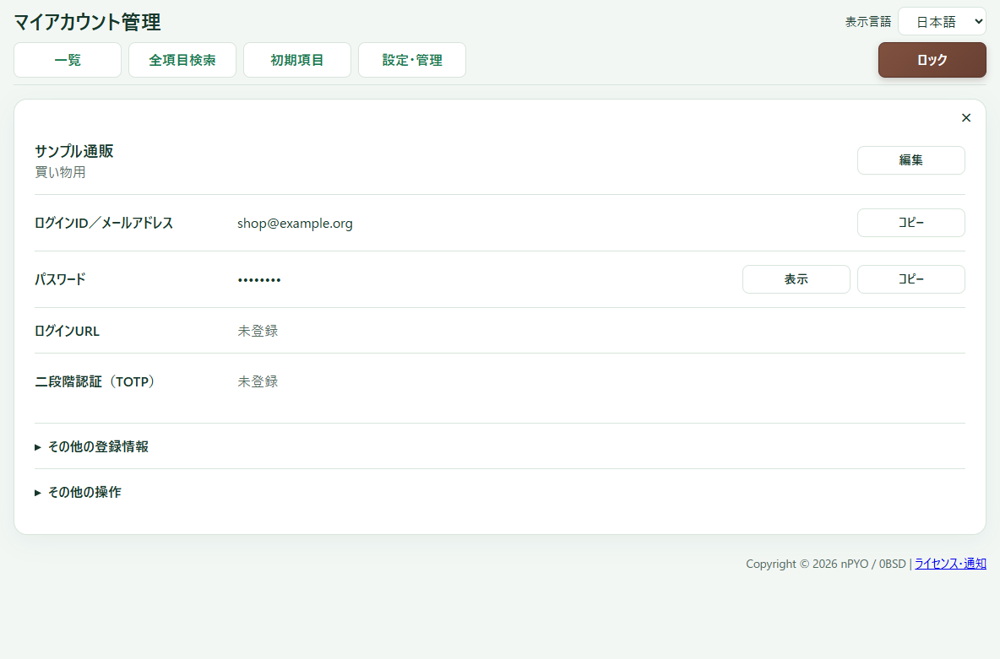

08任意項目を入力
折りたたまれた任意項目を開き、必要な情報を追加して保存します。
1編集画面を開く
一覧で対象の詳細を開き、［編集］を押します。［二段階認証・復旧コードなどの任意項目］を開きます。

2入力欄を見つける
任意項目が展開されます。例では［アカウント識別名］を使います。

3値を入力する
識別名に「買い物用」と入力し、［更新］を押します。

4保存完了を確認する
［アカウントを保存しました］を確認して閉じます。

5反映を確認する
詳細のサービス名の下に「買い物用」が表示されています。
